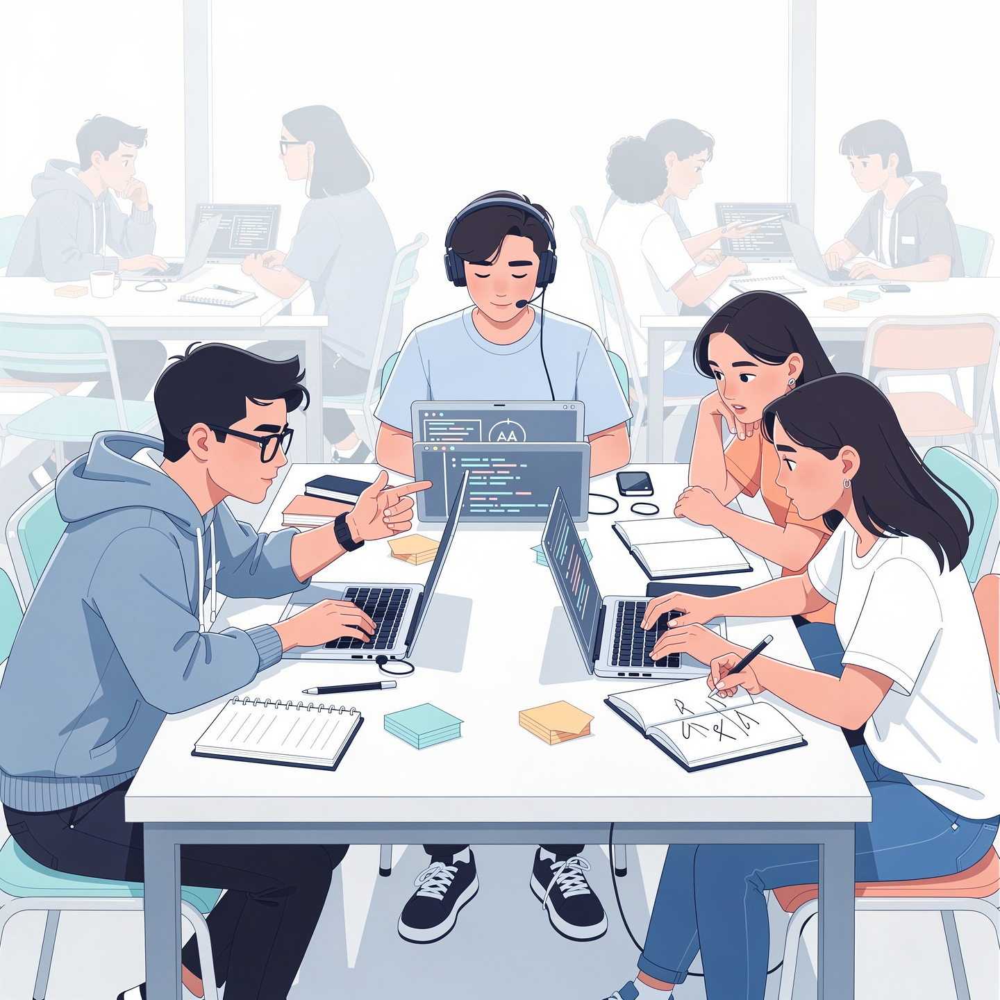
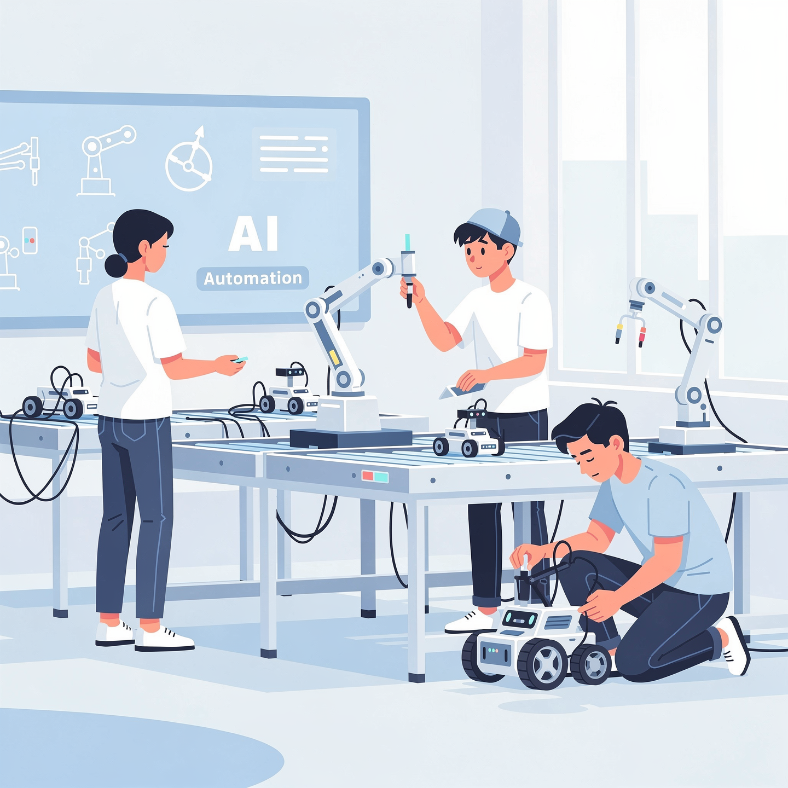
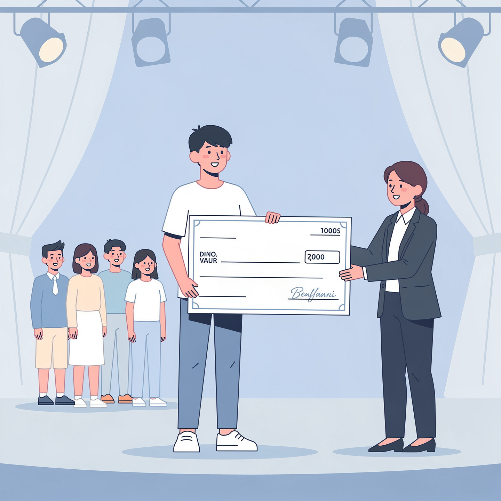

Earn a future-ready degree with industry-aligned skills, comprehensive career support, and IIT-aligned readiness pathways designed for tomorrow's technology leaders.
Experience a unique dual-focus curriculum that combines rigorous academic theory with practical industry skill pathways. Our program goes beyond traditional engineering education by integrating real-world applications, cutting-edge technologies, and hands-on learning experiences that prepare you for immediate workplace success.
Engage deeply with AI/ML applications, robotics systems, and intelligent automation projects from day one. Build a portfolio of meaningful work that showcases your capabilities to future employers, including machine learning models, data pipelines, computer vision applications, and natural language processing solutions.
Graduate ready for high-demand roles including Data Engineer, Machine Learning Engineer, AI Analyst, Business Intelligence Developer, and Deep Learning Specialist. Our curriculum maps directly to industry requirements, ensuring you possess the technical competencies and professional skills that top employers actively seek.
Benefit from merit-based scholarships, personalized mentorship from industry veterans, dedicated career counseling, and extensive networking opportunities with leading technology companies. We invest in your success through every stage of your academic journey and beyond.
Optional IIT Bachelor Readiness Pathway: Curriculum aligned to help motivated students prepare for and pursue IIT Bachelor programs in parallel with structured academic support.
This program delivers measurable returns on your educational investment through guaranteed placement support, industry partnerships, scholarship opportunities, and transparent outcome tracking. We understand that college fees represent a significant family commitment and provide comprehensive career services to ensure your investment translates into meaningful employment opportunities.
Our carefully structured four-year curriculum progressively builds your expertise from foundational concepts to advanced AI applications. Each year is designed to deepen your technical capabilities while providing increasing opportunities for specialization, real-world application, and career preparation.
Our pedagogy emphasizes active learning through practical application. Rather than passive lecture-based instruction, you'll engage with real industry problems, build working solutions, and develop the problem-solving mindset that distinguishes exceptional AI professionals. Every concept you learn is immediately applied in labs, projects, and collaborative challenges.
This experiential approach ensures you graduate with not just theoretical knowledge, but proven capabilities demonstrated through a comprehensive portfolio of work that showcases your skills to potential employers.
Weekly lab sessions where you implement algorithms, build models, and experiment with real datasets under expert guidance.
Tackle actual business challenges provided by our corporate partners, experiencing authentic problem-solving scenarios.
Participate in regular hackathons and research challenges that push your creativity and technical skills to new heights.
Build a comprehensive showcase of projects, code repositories, and demonstrations that prove your capabilities to recruiters.
Receive personalized guidance from industry practitioners who provide real-world insights and career advice throughout your journey.


The hands-on project experience made all the difference. I built a recommendation system during my third year that became the centerpiece of my interview conversations. Within three months of graduation, I secured a Machine Learning Engineer position at a leading fintech company. The faculty's industry connections and placement team's support were invaluable throughout my job search.
My summer internship at a major e-commerce platform transformed my understanding of real-world data science. I worked on customer churn prediction models that are now in production. The experience taught me not just technical skills, but how to communicate insights to non-technical stakeholders. I've already received a pre-placement offer and couldn't be more grateful for this program's practical focus.
What sets this program apart is the mentorship. My faculty advisor connected me with alumni working in computer vision, which is my passion area. Those conversations shaped my project choices and ultimately led to my current role developing autonomous vehicle perception systems. The network you build here extends far beyond graduation and continues opening doors throughout your career.
Your career success is our primary mission. From day one, our dedicated placement team works with you to develop professional skills, build industry connections, and secure meaningful employment opportunities. We provide comprehensive support that extends well beyond simple job postings, including personalized coaching, employer relationship management, and ongoing alumni career services.
Experienced career counselors who understand the AI/Data Science job market provide one-on-one guidance, helping you identify opportunities that align with your strengths and career goals.
Professional development workshops covering resume optimization, technical interview strategies, coding challenges, case studies, and behavioral interview techniques specific to AI roles.
Established relationships with 50+ technology companies ensure priority access to internship opportunities, with many students receiving pre-placement offers after successful internships.
Regular on-campus recruitment drives, exclusive job portals, and direct employer connections give you priority visibility with companies actively hiring AI and Data Science talent.
Majority of students secure meaningful internships during their program
Established relationships with leading technology companies
Strong track record of graduate employment within 6 months
Note: Industry partners and placement statistics represent recent historical outcomes. Actual companies and success rates vary year to year based on market conditions and individual student performance. Past results do not guarantee future outcomes.
| Program | Duration | Annual Fee |
|---|---|---|
| B.Tech in AI & Data Science | 4 Years | ₹1,00,000 – ₹1,50,000 |
Fee structure includes tuition, laboratory access, library facilities, and basic learning materials. Additional costs for accommodation, examination fees, and specialized certifications may apply.
We believe financial constraints should never prevent talented students from accessing quality AI education. Our comprehensive scholarship program rewards academic merit, early commitment, and family connections to make this program accessible to deserving candidates.

Students who confirm their admission within 72 hours of receiving their offer letter qualify for special early commitment scholarships ranging from ₹10,000 to ₹25,000 per year. This scholarship rewards decisive students who are certain about their educational path.
Outstanding academic performance in 12th standard examinations can qualify you for substantial merit scholarships. Students with 85%+ marks may receive ₹20,000-₹40,000 annual scholarships. Those with 90%+ may qualify for up to ₹50,000 annual support or more based on competitive evaluation.
Siblings of current students or children of alumni automatically qualify for special family scholarships of ₹15,000 per year. Referrals from current students or alumni that result in successful admissions may also earn both parties scholarship benefits.
Begin by submitting your application through our online portal or take our complimentary AI & Career Readiness Assessment to evaluate your current preparedness and receive personalized recommendations for strengthening your candidacy.
Meet with our admissions counselors who will review your academic background, discuss your career aspirations, explain program details, and answer any questions from you and your parents about curriculum, placement support, or logistics.
Qualified candidates receive their official admission offer within 48 hours of counseling. The offer letter includes complete program details, fee structure, scholarship eligibility, and next steps for enrollment confirmation.
Confirm your admission by submitting the initial fee payment and required documentation. Early confirmation qualifies you for additional scholarship opportunities and ensures your place in the upcoming batch.
Our comprehensive readiness test evaluates your mathematical aptitude, logical reasoning, programming basics, and career clarity. The 45-minute assessment provides detailed feedback on your current preparedness level and specific recommendations for improvement. Results can strengthen your scholarship applications and help you identify areas to focus on before starting the program.
For highly motivated students who aspire to pursue an IIT Bachelor program alongside their regular B.Tech degree, we offer structured academic and mentoring support specifically aligned with IIT Bachelor syllabus requirements. This optional pathway provides the academic rigor, faculty guidance, and peer support system necessary to successfully manage parallel programs while maintaining excellence in both.
Core subjects including Mathematics, Computing Fundamentals, Data Science, and AI foundations are mapped to align with IIT Bachelor curriculum requirements, ensuring content overlap and efficient learning.
Experienced faculty members provide specialized mentoring on navigating IIT Bachelor syllabus, identifying topic overlaps, and developing effective study strategies for both programs.
Weekly planning sessions help you create realistic schedules, prioritize coursework, manage assignment deadlines, and balance the demands of parallel degree programs.
Regular doubt-clearing workshops and one-on-one academic support ensure you stay on track with both programs without knowledge gaps.
Connect with fellow IIT-aspiring students for collaborative learning, shared resources, motivation, and mutual support throughout your parallel program journey.
This intensive option is ideal for:
Important Clarity: This is a readiness and academic support pathway designed to help students succeed in parallel programs. Admission to IIT Bachelor programs is governed exclusively by IIT's own eligibility criteria, application processes, and admission standards. Our support services facilitate your preparation and time management but do not guarantee IIT admission outcomes.
Yes, our B.Tech in AI & Data Science program is approved by UGC (University Grants Commission) and complies with AICTE (All India Council for Technical Education) standards. The degree is recognized by employers, government organizations, and universities worldwide for further education or employment purposes.
Graduates pursue diverse roles including Machine Learning Engineer, Data Scientist, AI Engineer, Data Analyst, Business Intelligence Developer, Deep Learning Specialist, Computer Vision Engineer, NLP Engineer, and AI Research Scientist. The field offers strong growth trajectories with competitive starting salaries typically ranging from ₹6-15 lakhs annually for fresh graduates, increasing significantly with experience.
No prior coding experience is required for admission. Our first-year curriculum begins with programming fundamentals and progressively builds your skills. However, students with some basic programming exposure may find the initial transition smoother. We recommend taking our readiness test to assess your current preparation level.
Our placement cell maintains relationships with 50+ hiring partners and actively coordinates campus recruitment drives. You'll receive resume workshops, mock interviews, technical preparation sessions, and soft skills training starting in your third year. The team shares job opportunities, facilitates company interactions, and provides ongoing support until you secure employment. Most students receive multiple offers during campus placements.
Absolutely. Our curriculum is designed with global standards in mind, making our graduates eligible for Master's programs at universities worldwide including the US, UK, Europe, and Australia. Many alumni have successfully gained admission to prestigious institutions for MS in Computer Science, Data Science, or AI specializations. We provide guidance on GRE preparation, application processes, and recommendation letters.
While traditional CS programs cover broad computing topics, our specialized AI & Data Science curriculum focuses specifically on machine learning, deep learning, data engineering, and AI applications from the first year itself. You'll spend more time on statistics, mathematics for ML, neural networks, and practical AI projects rather than hardware or systems programming that may be less relevant to AI careers.
Join hundreds of students who are building the future with artificial intelligence and data science. Your career in technology starts here.
Have more questions? Contact our admissions team at admissions@university.edu or call +91-XXXX-XXXX for personalized guidance.